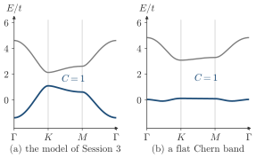

Advanced Quantum Materials 2027 · All lectures · Lecture notes
Session 4. Electrons in a Magnetic Field, Quantum Hall Effect and Landau Levels
4.20 Real materials realizing Chern and fractional Chern physics
There is no numerical exercise in session4.ipynb on the specific compounds of this survey.
The Chern insulator at zero field is not only a theoretical idea. Chromium-doped \((\text{Bi,Sb})_2\text{Te}_3\), which is a magnetically doped topological insulator, breaks time-reversal symmetry through real magnetism and realizes an integer quantized Hall conductance with no applied field. This is the route with magnetism and spin-orbit coupling of Section 3.10b. Twisted graphene bilayers aligned with a boron nitride substrate realize the same physics with a different mechanism, which is based on orbital currents and not on magnetic moments. On the fractional side, twisted two-dimensional materials can host topological flat bands. Their mathematical structure is similar to the one of an artificial pseudo-magnetic field, which comes from the elastic reconstruction of the lattice and not from a real field. Twisted bilayers of molybdenum ditelluride (MoTe\(_2\)) are a recent and striking example, and they show real fractional quantum Hall physics at zero magnetic field.


In twisted bilayers of MoTe\(_2\) there is no applied magnetic field. What plays the role of the lowest Landau level?
Show the answers
- A. ✗ False
This is false. Spin-orbit coupling alone keeps time-reversal symmetry, and a time-reversal symmetric band has a zero total Chern number. A Chern band needs time reversal to be broken, for example by valley polarization.
- B. ✓ True
This is true. The flat band has a Chern number and a structure similar to a Landau level. It comes from the lattice and not from a field. With interactions, a partially filled band can then give fractional states.
- C. ✗ False
This is false. A superconducting gap gives zero resistance. The fractional Chern state is an insulator in the bulk, with a Hall conductivity that is a fraction of \(e^2/h\). Its flat band with a Chern number is what plays the role of the lowest Landau level.
4.21 Closing summary
In this session we used two tools of Session 3, the Chern number (3.4), which fixes the Hall conductivity, and the bulk-boundary correspondence of Section 3.7. We applied them to the flat bands that a magnetic field gives, and we saw the following.
The Hall conductivity is the Chern number of the occupied bands, equation (4.1). This is the result (3.4) of Section 3.5, which we did not derive again.
A magnetic field turns a two-dimensional electron gas into a set of flat Landau levels, each with Chern number one, so the Hall conductivity is quantized to \(N e^2/h\) for \(N\) filled Landau levels, equation (4.2).
An insulating bulk still conducts because a nonzero Chern number gives chiral edge states without backscattering at the boundary of the sample, as we saw in Section 4.5. We can see them directly in the band structures of ribbons.
Landau levels come from minimal coupling (4.3) or, on a lattice, from the Peierls substitution (4.4). Schrödinger electrons give equally spaced levels \(E_n=\hbar\omega_c(n+\tfrac12)\), equation (4.6), while Dirac electrons give \(E_n\propto\sqrt{nB}\), equation (4.7), and this explains the much higher temperature scale of the quantum Hall effect in graphene.
In the symmetric gauge, the wavefunctions of the lowest Landau level are holomorphic, \(\psi_m(z)\propto z^m e^{-|z|^2/4\ell_B^2}\), equation (4.10). The many-body state of the filled LLL is the Vandermonde determinant times a collective Gaussian, equation (4.11).
When we raise the Vandermonde factor to an odd power \(m\) we obtain the Laughlin wavefunction, equation (4.12), with filling factor \(\nu=1/m\), equation (4.13). Its quasihole excitations, equation (4.14), have fractional charge \(e/m\), equation (4.15), and follow anyonic statistics. They get a phase \(2\pi/m\) for a full braid, equation (4.16), which is an exchange phase \(\pi/m\) strictly between the bosonic \(0\) and the fermionic \(\pi\). This is the simplest case of fractionalization that we will meet.
The Haldane model of Section 3.10b shows that the quantized Hall conductance does not need a magnetic field. It is adiabatically connected to the quantum Hall state driven by the field, so the two are the same topological phase, as we saw in Section 4.19.
In this session the order was driven by a magnetic field, which is an external parameter that breaks time-reversal symmetry and that we switched on by hand. In Session 5 we will see a different route, which is the attractive interaction between the electrons themselves. It makes a superconductor without any external field. The classification into trivial and chiral topological states, which we built here and in Session 3, comes back there to sort the superconducting order parameters. Fractionalization also comes back, in a form that looks quite different. Here the correlations inside a partially filled topological flat band split the charge of the electron and made its exchange statistics anyonic. In a superconductor, pairing correlations split the electron into two Majorana halves instead. The idea is the same, a correlated topological state with excitations that are not the electron itself, but the two mechanisms are different.
The Laughlin quasihole of this session and the Majorana halves of Session 5 are both fractionalization. What do they share?
Show the answers
- A. ✗ False
This is false. The fractional Chern states of twisted MoTe\(_2\) appear at zero applied field. A Kitaev chain in the topological phase needs a p-wave pairing, and the field is only one way to get it.
- B. ✓ True
This is true. The mechanisms are different, since one comes from correlations in a flat band and the other from pairing in a superconductor. In both cases the excitations are not the electron itself.
- C. ✗ False
This is false. For electrons without interaction in a partially filled lowest Landau level, there are many degenerate states and no gap, so no Laughlin state. The Laughlin state needs strong interactions.
- In Section 5.1 the fractional quantum Hall state and the superconductor are put at the two ends of the correlated states, and in Section 5.15 an electron is split into two Majoranas.
- In Section 5.14 a chiral p-wave superconductor has a Chern number and chiral Majorana edge branches.
- In Section 6.16 magnon bands get a Chern number from the same integral of the Berry curvature.
- In Section 7.1 fractional Chern insulators are one of the two main examples where mean-field theory fails.
- In Section 10.6 the Chern number is the example of a quantity that separates phases where no local order parameter does.